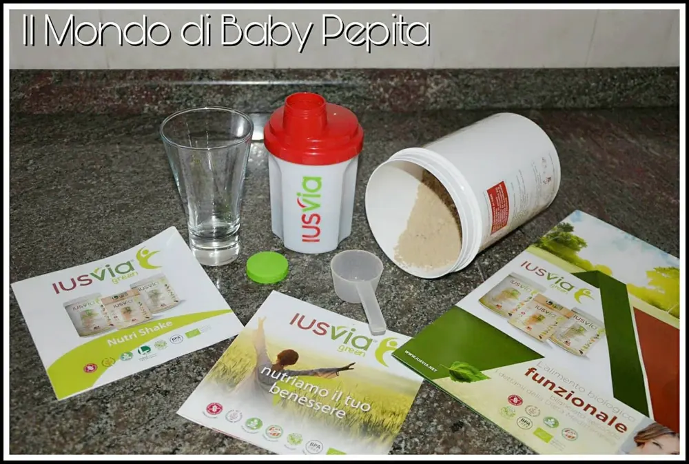
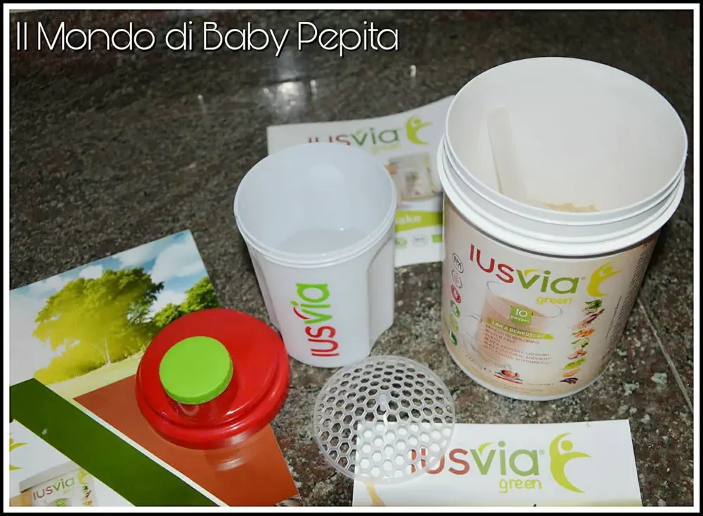
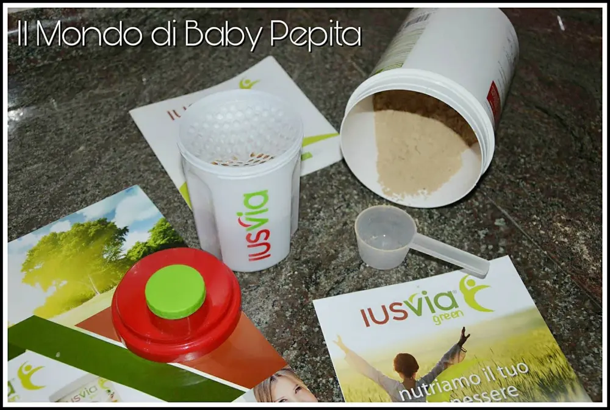
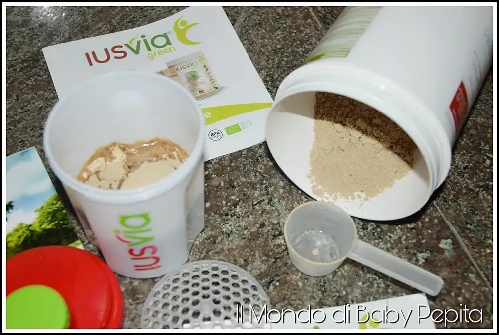
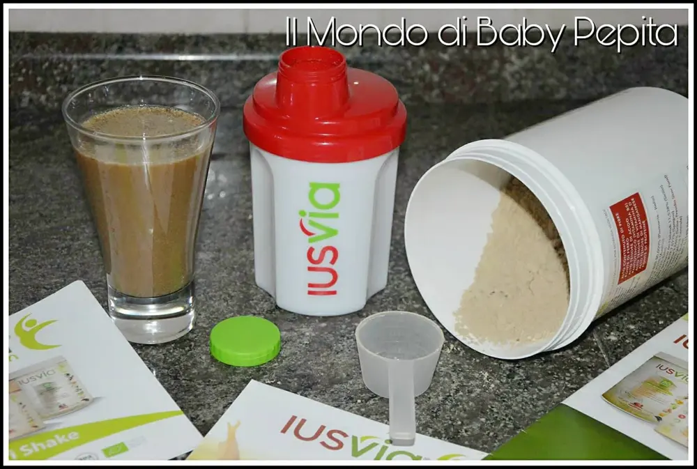

IUSVIA - prenditi cura di te
Iusvia: C'è un mondo dietro alle mille diete e alimentazioni che non tutti conoscono ed è quello delle alimentazioni sane.
Quello fatto di frullati e vitamine adatte ad un regime alimentare equilibrato.
Oggi voglio parlarvi di un IUS VIA GREEN.


Cos'è per l'esattezza? Si tratta di una miscela vegetale in polvere che viene utilizzata appunto, per preparare una deliziosa bevanda biologica al gusto di nocciola.
È uno shake che può essere usato da vegano, vegetariani, crudisti, sportivi o per chi semplicemente è sempre di corsa o in viaggio e non ha tempo per mangiare, ma non deve assolutamente fare a meno di mangiare poichè è un fattore importante della nostra giornata.

Bevendo un frullato di Iusvia saremo sicuri di assumere fibre, di conseguenza rallenta l'assorbimento di grassi a livello intestinale.
Dunque ottimo anche in un regime dimagrante e depurativo.
È ricco di ferro, che contribuisce a sostenere il fisiologico metabolismo ed energetico, il chè permetterà la corretta funzione dei globuli rossi e dell'emoglobina, nonché al trasporto di ossigeno nell'organismo.
Aiuterà anche per chi soffre di stanchezza e di affaticamento.

Contiene anche la vitamina D; essa contribuisce all'assorbimento ed utilizzo di calcio e fosforo, quindi indicato anche per gli studenti per una perfetta concentrazione.
In questo frullato è presento anche l'acido pantotenico che aiuta ad una corretta funzione del metabolismo degli ormoni steroidei e di alcuni neurotrasmettitori.
Poi ovviamente è ricco di proteine che contribuiscono alla crescita della massa muscolare e al mantenimento di ossa normali.
Infine, ma non per ultimo, contiene anche magnesio, esso contribuisce al mantenimento delle ossa, a sostenere il fisiologico metabolismo energetico, alla formazione dei tessuti connettivi ed alla protezione dallo stress ossidativo cellulare.

Dunque, bevendo un frullato di IUS VIA GREEN al giorno potremo stare tranquilli di aver assunto tutte le informazioni nutritive necessarie che il nostro fabbisogno quotidiano richiede.
In alternativa, possiamo utilizzarlo anche come supporto nei momenti dove, per necessità e frettolosamente, si è costretti a consumare fuori casa pasto o spuntino.
Ovviamente, se è possibile è sempre meglio mangiare cibi freschi e genuini. Tuttavia, il ricorso a Ius Via Green, in situazioni non ottimali di tempo, è un buon sostitutivo.

È possibile acquistare la polvere in barattolo o anche in sacchetto, cosicché da tenerlo sempre con noi.
Confezione contenente 6 bustine da 13 g pari a 3 porzioni.
Prezzo: 8,90€
Il barattolo invece, è possibile una misura di 260 g. pari a 10 porzioni
Prezzo: 24,90€
Il barattolo di 520 g. pari a 20 porzioni.
Prezzo: 44,90€
In più è importante avere lo shaker per dosare e portare sempre con noi il frullato, in quanto ha una chiusura ermetica di conseguenza non c'è rischio.
Lo shaker è utile e facile da usare, ideale sia a casa che fuori.
Prezzo: 2,50€